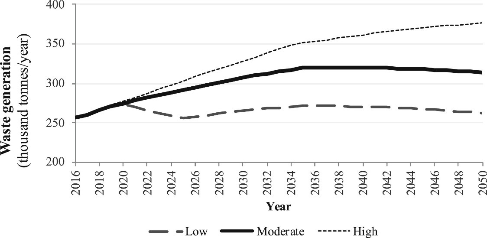
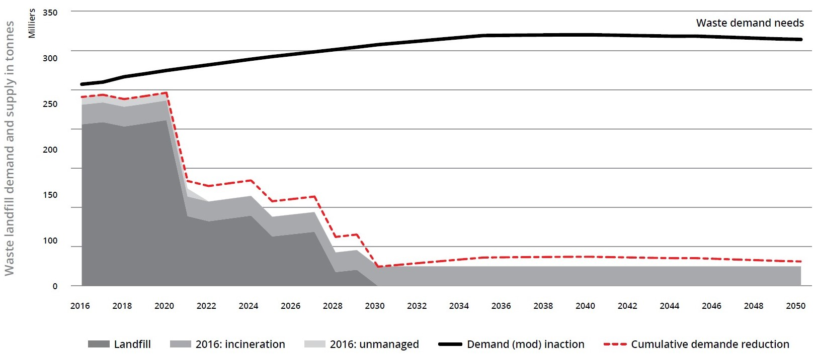
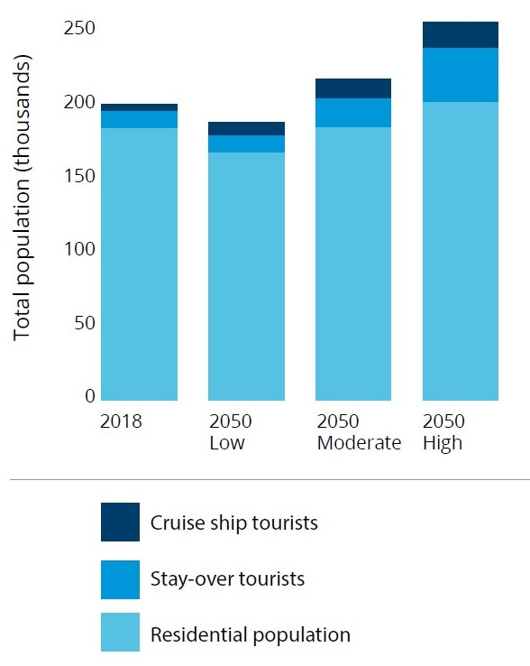
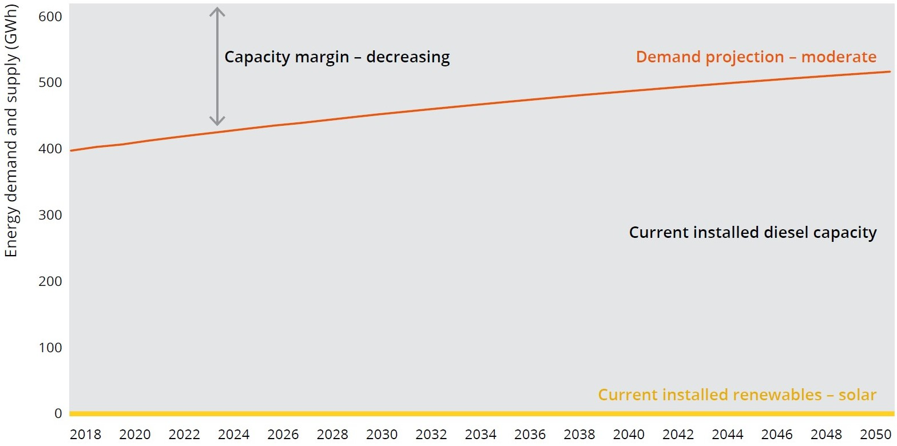
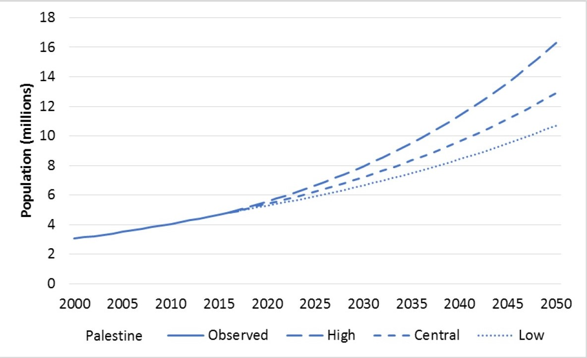
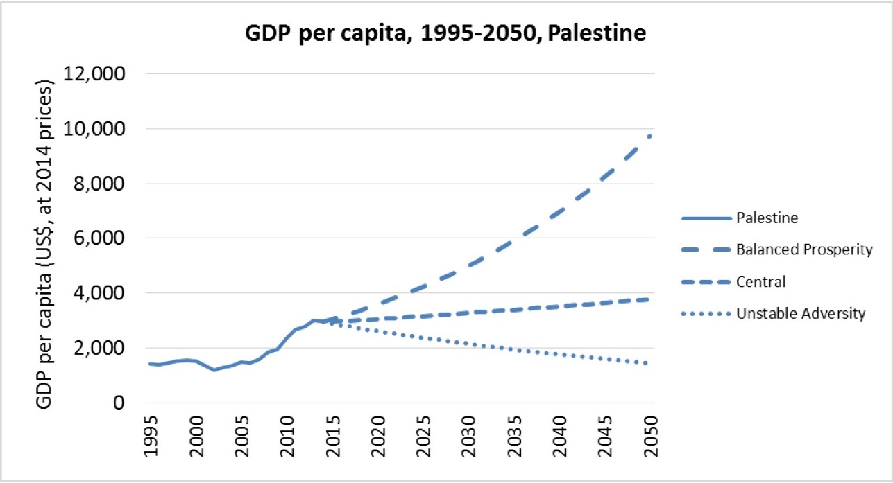
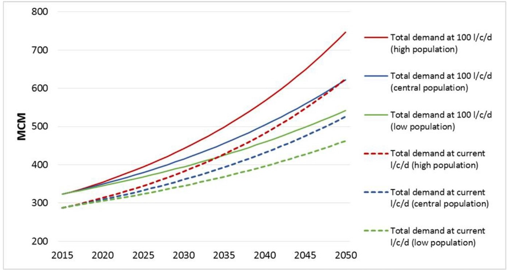
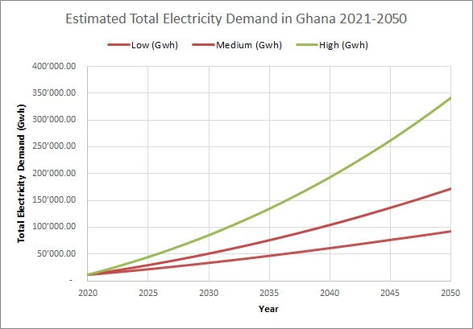

This mini-lecture shows four practical examples of demand forecasting applications in Curaçao, Saint Lucia, Palestine and Ghana. These case studies provide examples of forecasting estimation based on population growth, tourism and economic development.
This mini-lecture will showcase different applications of the National Infrastructure Systems MODel – International (NISMOD-Int) for demand forecasting. Infrastructure demand forecasting was used in a range of international contexts including Curaçao, Saint Lucia, Palestine, Ghana and others. The specific details and differences between countries will arise by describing the rationale and the process followed in each of these cases. As explained in previous mini-lectures, different contexts require different infrastructure drivers, which also depend on stakeholder visions and expectations.
The cases studied here cover the aforementioned four countries and three infrastructure sectors: waste, electricity and water. Additionally, infrastructure needs are also discussed in terms of future performance of current systems and why they need to be restructured.
For the waste sector in Curaçao, population, tourism and economic growth were used as future demand drivers. Expected waste generation for population and tourists were merged to construct low, moderate and high waste generation scenarios, as shown in Figure 4.4.1. The projections show a broad range of waste generation by 2050, varying between 260 and 375 thousand tonnes per year.

Figure 4.4.1: Waste Generation Projections for Curaçao (Fuldauer et al. 2019)
Waste management in Curaçao currently depends heavily on landfills, which are due to run out of capacity in the near future. Figure 4.4.2 shows that, at the current rate of waste generation, and without other interventions, landfills will be full by 2030. Therefore, waste management in the future will need new options, such as waste treatment and recycling plants, waste reduction programmes and as the last option (following the waste hierarchy described in mini-lecture 4.2), new landfills for final disposal.

Figure 4.4.2: Waste demand and current supply (Adshead et al. 2018)
In the Saint Lucia case study, energy demand was also estimated based on population and tourism growth, as in Curaçao. Figure 4.4.3 shows three projections to 2050 for cruise-ship tourists, stay-over tourists and the residential population. Not only do the numbers vary but also the trajectories (i.e. population can increase or decrease by 2050).

Figure 4.4.3: Residential and peak tourism scenarios (Adshead et al. 2020)
Per capita consumption rates in the island were estimated with current consumption. Residents consume on average 1.4 MWh/resident/year and 0.2KW/resident at peak time. Tourists consume 12.2 MWh/tourist/year and 1.9KW/tourist over the peak period, which is about 10 times the residential consumption. Therefore, seasonal tourism is an important driver when it comes to future infrastructure planning. A comparison of residential consumption rates for Caribbean small island states (3.0 MWh/resident/year) and OECD (Organisation for Economic Co-operation and Development) countries (7.7 MWh/resident/year) (World Bank 2014) suggests that per capita consumption rates in Saint Lucia might increase alongside economic development.
Figure 4.4.4 shows the moderate demand projection in comparison with current diesel and renewables supply. Current diesel has enough capacity to attend future demand, however the commitment to reduce carbon emissions, the high cost of diesel and the dependence on this fossil fuel (which is imported), call for a restructuring of the system and the development of new energy supply options.

Figure 4.4.4: Future energy needs for a moderate scenario (Adshead et al. 2020)
For a Fast Track Analysis of infrastructure provision in Palestine (Ives et al. 2018), population change and economic development were used as the drivers of future scenarios.
Population forecasts for Palestine were developed by combining population growth expected for both Gaza and the West Bank. The sum of these two projections resulted in a range of between 10.7 and 16.3 million people by 2050, for the High and Low scenarios, respectively (Figure 4.4.5). These projections are equivalent to average annual growth rates of 2.3% and 3.6%, respectively, which are in line with the average growth rate of 2.6% for Palestine between 2007 and 2016 (Ives et al. 2018).

Figure 4.4.5: Population projections for Palestine (Ives et al. 2018)
Economic forecasts were also developed for Palestine for the baseline economic scenario, the optimistic scenario and the pessimistic scenario by using annual GDP growth rates of 3.5%, 5.5% and 1.5%, respectively (Ives et al. 2018). As shown in Figure 4.4.6, three socio-economic scenarios were created: (1) “balanced prosperity” by combining the low population growth with the optimistic economic scenario, (2) “central” by combining the central population growth and the baseline economic scenario, and (3) “unstable adversity” by combining the high population growth and the pessimistic economic scenario.

Figure 4.4.6: Economic projections for Palestine (Ives et al. 2018)
Figure 4.4.7 shows water demand projections for low, central and high population scenarios. In this case, two sets of projections are presented, the first one by using current consumption ratios (dotted lines) and a second one by using a World Health Organization recommended ratio of 100 litres/capita/day (solid lines). In this way, the expectation to achieve certain development indicators can be established in the future projections of infrastructure demand.

Figure 4.4.7: Water demand projections for Palestine (Ives et al. 2018)
Population growth and how socio-economic development might change consumption patterns were used for water and electricity demand projections in Ghana. United Nations population forecasts (United Nations Department of Economic and Social Affairs 2019) were used to create three population growth scenarios: the medium estimation, and the upper and lower 95% percentiles from the probabilistic scenarios.
Current domestic per capita consumption rates in Ghana are 351 KWh/per capita of electricity (World Bank 2021). Ghana is currently considered middle-income, however, its per capita consumption rates are lower than comparable countries. According to the World Bank development indicators (World Bank 2021), lower middle-income countries, middle-income countries and upper middle-income countries have electricity consumptions of 749 KWh/per capita, 2044 KWh/per capita and 3307 KWh/per capita, respectively. Electricity consumption rates in high income countries are 8929 KWh/per capita, on average.
Therefore, future electricity demand projections were developed with the expectation to achieve current Middle-Income consumption levels by 2050, in the pessimistic scenario and high-income consumption levels for the optimistic scenario. Consequently, the projections shown in Figure 4.4.8 are driven not only by population change but also by a progressive increase in per capita consumption patterns.

Figure 4.4.8: Electricity demand projections for Ghana (based on data from United Nations Department of Economic and Social Affairs (2019) and World Bank (2021))
In this mini-lecture we described the forecasting process for infrastructure demand in four different countries in which the NISMOD-International tool has been applied. With this approach, we have illustrated the details, considerations and challenges of infrastructure demand forecasting in developing regions.